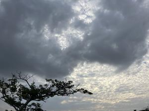
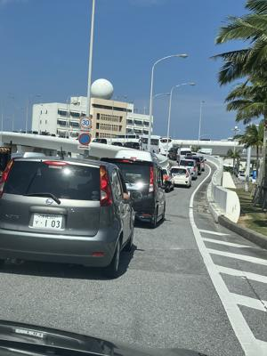
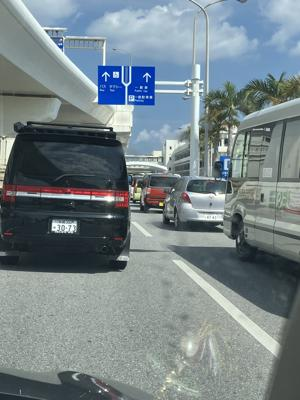

うるがいの話 ある日
最新: 那覇空港は混んでいた【うるがいの話 ある日】とは 一日だけのプログです
『うるがいの話』の最新一日だけのプログで、通信料が少なく経済的だ。カニの画像をクリックすると全ての日付が載る『うるがいの話』サイトを表示します
|
|
【うるがいの話】 うるがい(ｳﾙｶﾞｲ urugai)とは、『もずくがに』の名前でとても大きくなります。 |
|---|---|
|
|
【カミマヤーの話】 猫のことを方言でマヤーといいます。カミマヤー（kamimayaa）とは、神の猫のことです。 |
|
【たながぁの音楽】 たながぁ（ﾀﾅｶﾞｰ tanagaa）とは手長えびのことで、何種類かあり大きいのは車 エビぐらいになります。 |

|
【ぶながぁの話】 ぶながぁ(ﾌﾞﾅｶﾞｰ bunagaa)とは、赤い髪の毛、赤い身体、そして身長は１ｍ２０ｃｍ ぐらい、川の蟹を食べているの目撃された。場所は沖縄県国頭郡大宜味村のと ある村僕の隣近所に住んでいる爺さんから、聞いた話です。 |
|
|
【ギーマの話】 ギーマ(giima)とは、山原の里山に咲くスズランに似た、 花を付けます。実は食べられます、 気が付くと口の周りが紫になっています。 |
2024年03月15日 (金）那覇空港は混んでいた
16:51

コドモを１１時ごろに空港を送った、いつもの３階へ行こうとすると登る前
で車の列。事故か？、すぐさま下に方向を変えた。しばらくは、スイスイ、
ところがである、まともや車の列で止まってしまった。なんてことない、単
純に混んでいるだけだった。もう一人の子供も、お隣の国に初めての海外旅
行にいった。パスポートを、常に携帯していたので、パスポートは旅行に行
くときだけ持った方がいいよとヨメが忠告したが、子供は子供のポリシーが
あり、携帯のスタイルは変えないと言った。


１６時４３分 ビットコインの総資産 ￥２９、６５８（↓１、５８１！）